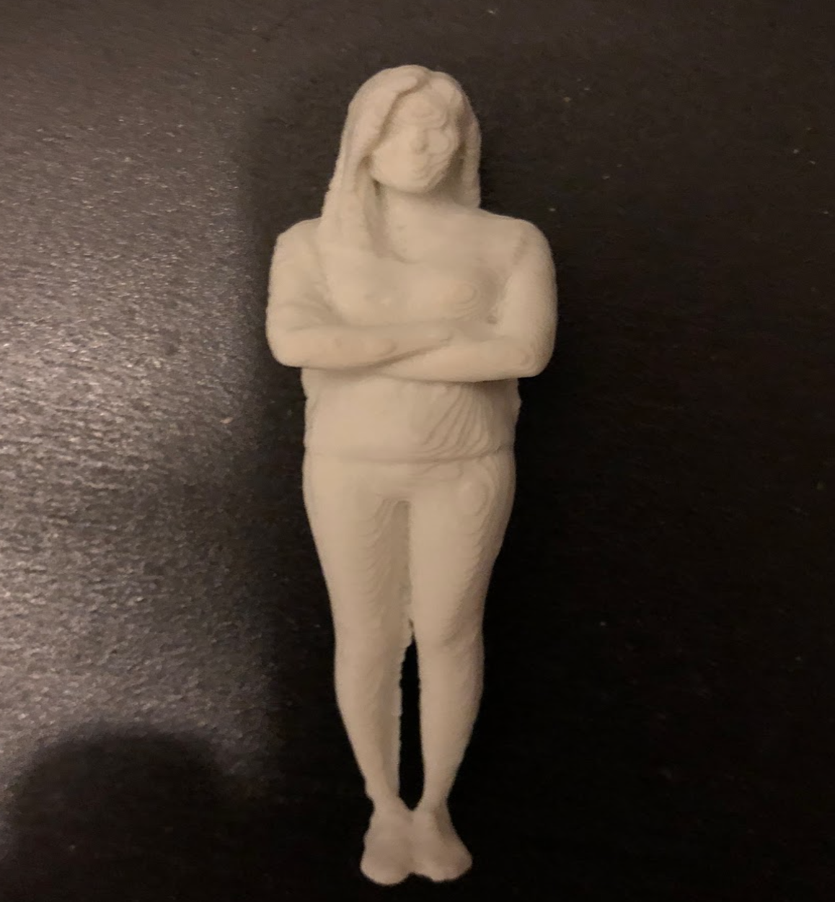

In my animation artwork, “Learning Desk,” I created an animation of three objects jumping down the desk, then flowing into the wind and spinning. The idea of this artwork is inspired by the time when I was working on it: I was sitting in
coffee shop with my pen, cup, and a book on the table. And I was a little bit tired and dizzy. Afterward, I wanted to give the reader a unique feeling about the surging feeling by spinning around the objects again and again. Hence, I was
modeling the pen, cup, and book into 3D space, and I think it would come with the exact look the same as the real item, so I took a picture of those and downloaded texture from a website, I created an authentic look to the objects by
assigning a new surface in 3D space. After the modeling, I keyframed the position and rotation of each object, made it as a spin cycle animation. Also, I wanted to enhance the strength of swirling feeling, so I moved these objects back and
forth, spinning them around and randomly rotating them. It shows the rhythms the mind expect. In the end, I added sound to it to give a better feeling.
Yingshi Feng, Thousand-Hands, Maya Rendering.
In the artwork “Thousand-Hands,” I was inspired by the Buddhist Character Shiva, because I was born in Asia, and most of our religion is Buddhism. So, religious art influenced me in a deep way along, Many characters in Chinese Buddhism have
a thousand hands behind them, which represents great, sacred ability and how we can help people who they are in the abyss of suffering. Therefore, I would like to help people by using art as well I created a portrait of myself and attached
that “Thousand-hand” onto myself. I scanned my own body with a speatic pose by the sensor; then I auto-repaired all the mesh before putting it into Maya. The 3D environment gave me the opportunity to develop the character in many ways, and I
created one hand and copied it to make ten, then attached it to the back with correct posture as well. Especial the finger and nails, it gives a realistic tone, but with an impossible prosthetic. I had much fun working on it. After adding
light and shadow on the character, I created a light violet area, and it made the artwork more a blend of fantasy and religious art.

Yingshi Feng, Me, 3D printing, 80*20.
I developed the Thousand Hand concept to print it out as another artwork. It is called “Me.” I use the same character that I created earlier, then this time I needed to convert it into another software and give some support for it. Mixed
medium is a pretty good idea for this artwork. I used a 3D printer as my media, then printed out the entity of “Thousand-Hand,” it gives another feeling and meaning to me, which is the experience of combining 3D modeling, 3D printing, and
sculpture into one art piece.
Yingshi Feng, Playing, Animation, 0:30 Seconds
After the experience of animation progressed, I planned to make a new animation with a character. I wanted to show the difference between virtual and reality. However, I used my self-portrait as the main Character, but this time I am using
a new software called “Make Human,” it provides a more realistic setting for an element and creating a perfectly realistic human body. And then I created the self-portrait by referring to all facial and body features, converting it into 3D
space. I created a clown job for myself, stand in front of the amusement park, playing with the acrobatics. It’s a cycle animation as well, which repeats thought the ball. In this artwork, I tend to focus on the characters movement, which I
need to create the skeleton of a human body, add HK handle of it, adjust all the bone orientations, then bind to mesh and to rig the mesh. It gives a great chance to make a naturally human.
Yingshi Feng, Planet, Animation, 0:58 Seconds
I really like the universe since I was a child, the dark and blinking stars give me a feeling of fantasy and a sense of curiosity. Therefore, I created a dark black color background universe. Then I modeled many spheres like the stars. I
used my self-portrait made from “Make Human” as my character. In the beginning, my character put on the VR glasses to travel around the universe from first person view. And then I used different materials and textures in each sphere, and it
surprised me that the texture gave more freshness in this new universe. That's why I always wanted to make some fantasy thing that we cannot do in real space.
Since I have a strong passion and talent in animation. I will keep working at this direction in future. I connect myself to the virtual space step by step, I believed that one day I can be a good animator.
Composite Art,iamge,Yingshi Feng.
My concept is to make place series about environmental pollution. My concept is to make about ocean pollution. As more plastic is produced and discarded, this will affect oceanic pollution. I search the image about the pollution of the
sea，then put them together to make an island. I name it“Our future”. Now is a small island, but if we do not stop this, it will become the whole world.
In the project, I combine the P5js, composite art, and HTML together. The idea is talked about waste in the ocean, how it affects ocean life. And trying to address this issue by using web space.
Airplane, P5JS,Yingshi Feng.
I made an airplane flying on a bright sunny day when mouse click the weather will change to a dark rainy day. The sun will become the moon, and the star and rain will show.
Teach Human Nature,Video,Yingshi Feng.
Technology developed very fast, human keep walking forward，it keep change the relationship between human and nature, we should looking for the balance.
Time Travel,Video,Yingshi Feng.
This piece reminds people of the joy during childhood, time is passing fast, and engage people to cherish what we have today.